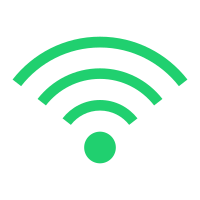
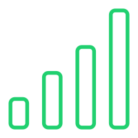

<!--
  Generated template for the CarinfoPage page.

  See http://ionicframework.com/docs/components/#navigation for more info on
  Ionic pages and navigation.
-->
<!-- <ion-header no-border class="head">

    <ion-navbar class="navbar-header">
      <ion-title class="title-header">位置服务</ion-title>
      <button ion-button class="start-btn" small outline (click)="queryinfo()">资料</button>
    </ion-navbar>
  
  </ion-header> -->


<ion-content class="content-map">
    <div #map id="map_container"></div>
    <div class="div-info" *ngIf="carinfo">
      <ion-row class="info-row" >
        <ion-col col-5 class="name-center">
            <span class="logo-span" *ngIf="carinfo.connectedtype == 1" >T</span>
            <span class="logo-span" *ngIf="carinfo.connectedtype == 0">V</span>
            <span class="logo-span" *ngIf="carinfo.isObd == 1" >M</span>
            <span class="name-col">{{carinfo.devicename}}</span>
        </ion-col>
        <ion-col col-1 class="imgstatus-col">
            
        </ion-col>
        <ion-col col-3 class="imgstatus-col">
          <span class="span-status" [style.color]="spancolor" height="26px">{{carinfo.vehicleState}}</span>
        </ion-col>
        <ion-col col-3 class="logo-col" align-self-center>
            
            
            
        </ion-col>
        <!-- <ion-col col-3 class="logo-col" align-self-center *ngIf="carinfo.connectedtype == 0">
            
            
            
        </ion-col> -->
      </ion-row>
      <ion-row class="info-row">
        <ion-col col-7>设备号：<span>{{carinfo.imei}}</span></ion-col>
        <ion-col col-5>速度：<span>{{carinfo.gpsinfo.speed}}km/h</span></ion-col>
      </ion-row>
      <ion-row class="info-row">
        <ion-col col-8>
          定位时间：<span>{{carinfo.gpsinfo.gpstime}}</span><br/>
          信号时间：<span>{{carinfo.gpsinfo.intime}}</span>
        </ion-col>
        <ion-col col-4>
            <ion-col col-2 >
              <span  *ngIf="carinfo.gpsinfo.locationType == 0">基站定位</span>
              <span  *ngIf="carinfo.gpsinfo.locationType == 1">GPS定位</span>
              <span  *ngIf="carinfo.gpsinfo.locationType == 2">wifi定位</span>
            </ion-col>
            <ion-col col-2 class="time-col">
                <span class="time-span"> {{timedown}}秒</span>
            </ion-col>
        </ion-col>
      </ion-row>
      <ion-row class="info-row">
        <ion-col col-2>
            地址：
        </ion-col>
        <ion-col col-10>
          <span>{{localaddress}}</span>
        </ion-col>
      </ion-row>
    </div>
    <div class="div-btn">
      <ion-row class="btn-row">
          <ion-col class="map-btncol" (click)="queryinfo()">
            <br/>
            资料
          </ion-col>
        <ion-col class="map-btncol" (click)="realtime()">
          <br/>
          实时
        </ion-col>
        <ion-col class="map-btncol" (click)="playback()">
            <br/>
          回放
        </ion-col>
        <ion-col class="map-btncol" (click)="police()">
            <br/>  
          报警
        </ion-col>
        <!-- <ion-col class="map-btncol" (click)="navigation()">
            <br/>
          导航
        </ion-col> -->


        <!-- <ion-col class="map-btncol" (click)="setting()">
            <br/>
          设置
        </ion-col> -->
      </ion-row>
    </div>
</ion-content>
